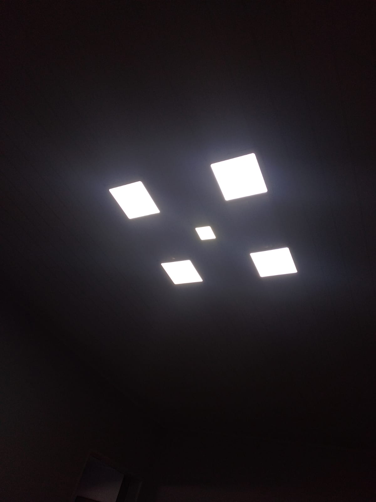

Energia no Campo
A energia é fundamental para o desenvolvimento das atividades rurais, possibilitando desde a irrigação até o funcionamento de máquinas e equipamentos que aumentam a produtividade no campo.
Nos últimos anos, a busca por fontes de energia renovável tem crescido no meio rural, com destaque para a energia solar, o biogás e a energia eólica, que oferecem alternativas sustentáveis e econômicas para as propriedades rurais.
Além de reduzir custos, essas tecnologias ajudam a diminuir o impacto ambiental, promovendo uma produção agrícola mais limpa e consciente, alinhada com os desafios da sustentabilidade global.